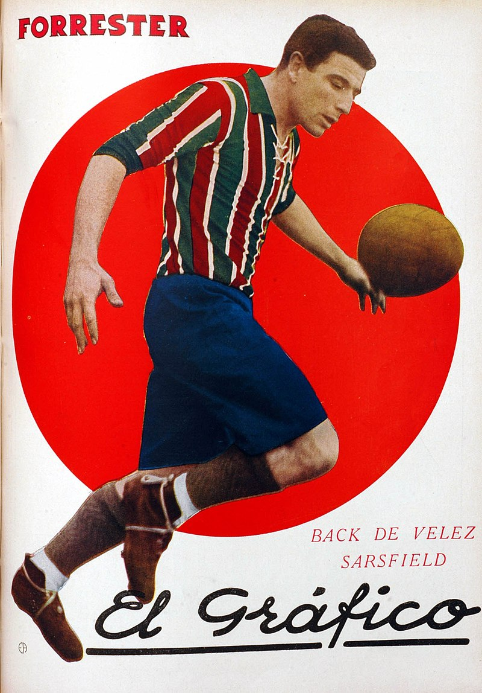
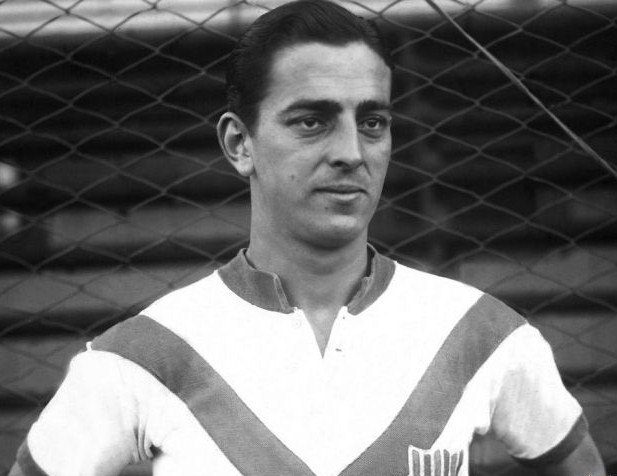
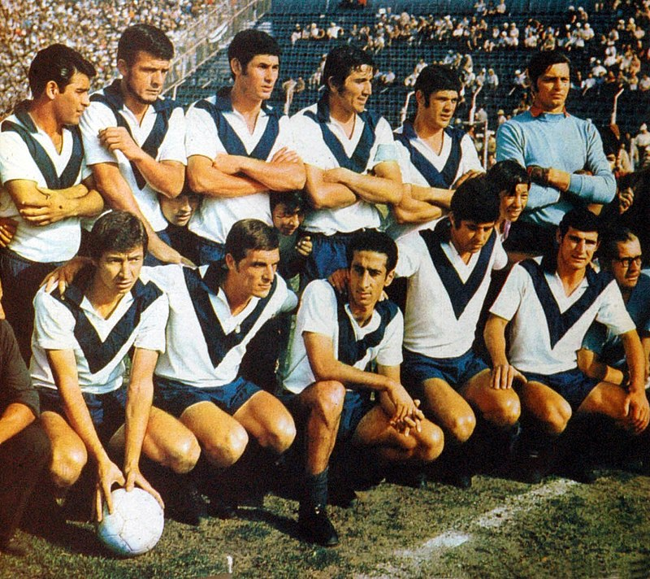
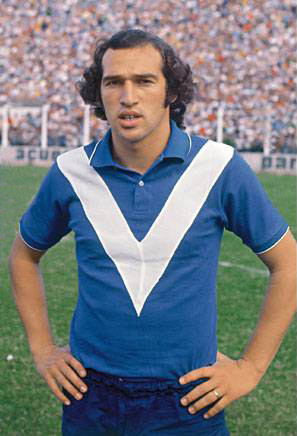
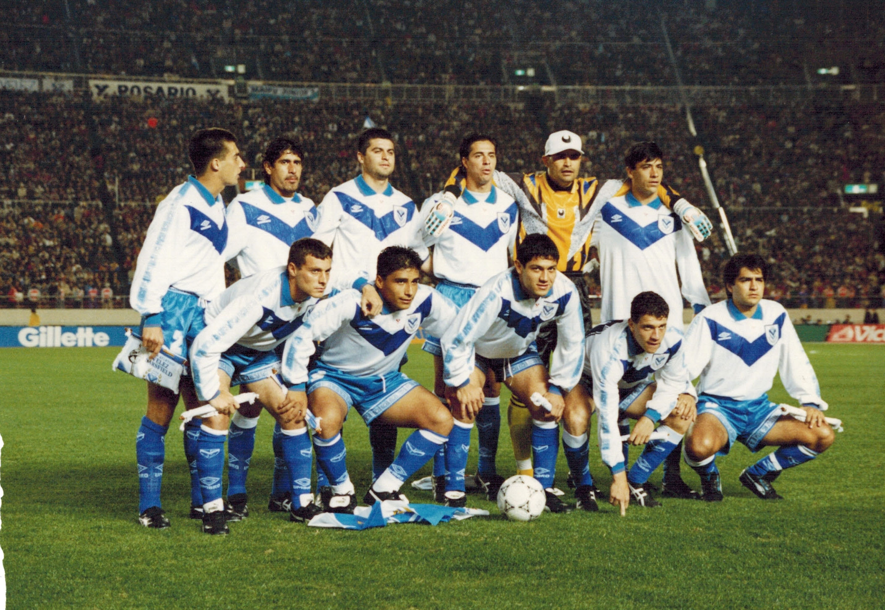
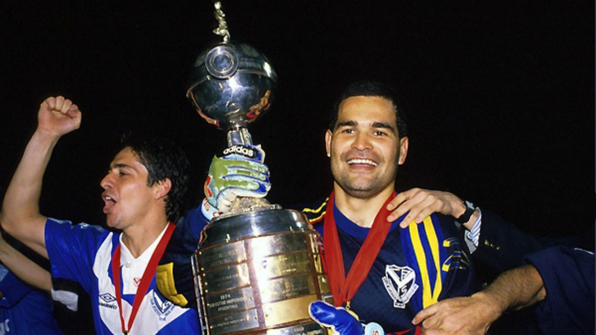

El Club Atlético Vélez Sarsfield es una institución deportiva argentina con sede en el barrio de Liniers, en la Ciudad Autónoma de Buenos Aires. Fundado el 1 de enero de 1910, es conocido principalmente por su equipo de fútbol, que compite en la Primera División de Argentina. A lo largo de su historia, Vélez ha logrado numerosos títulos nacionales e internacionales, consolidándose como uno de los clubes más importantes del país.
Primera etapa
La historia del Club Atlético Vélez Sarsfield comenzó el 1 de enero de 1910, cuando un grupo de jóvenes decidieron fundar una «sociedad sportiva» en los túneles de la estación Vélez Sarsfield hoy Floresta del Ferrocarril del Oeste. En honor al lugar y para diferenciarse de las instituciones inglesas, lo llamaron Club Atlético Argentinos de Vélez Sarsfield.
Comenzó su participación futbolística en 1911, cuando compitió en una liga independiente. En 1912 se afilió a la Asociación Argentina de Football y al producirse la primera escisión del fútbol Argentino, se enroló en la Federación Argentina de Football ambas antecesoras de AFA, para disputar los torneos de Tercera división. En 1919 llegó a la máxima categoría y fue uno de los 18 fundares de la Liga Argentina de Football.
Debut en la Primera División
Debut en Primera y subcampeonato (1919) El 12 de octubre de 1919 debutó en la categoría máxima, en la tercera fecha, con el torneo ya iniciado, venciendo de local a Independiente por 2:1 con dos goles de Martín Salvarredi En su primera participación en la elite logró ser segundo por detrás de Racing Club, siete veces campeón de manera consecutiva. Está primera campaña fue sorprevisa para propios y extraños sin embargo no podría repetirlo en los años siguientes, el club no podía competir con los grandes de la época y era una institucion joven que estaba en pleno crecimiento.
Amalfitani presidente
En 1923, el club eligió como presidente a un joven ingeniero llamado José Amalfitani, quien se convertiría en una figura clave en la historia de Vélez Sarsfield y del futbol Argentino y un ejemplo de manual sobre como llevar adelante una institución deportiva. Aunque fue en su segunda etapa que donde se dejó su impronta pero ya llegaremos a eso. En cuanto a lo deportivo atravesó una baja de rendimiento,considerable porque el club empezaba a priorizar lo social por sobre lo deportivo, esto duraría hasta finales de la decada.
Incio del profesionalismo
Los 18 clubes de mayor convocatoria entre ellos Vélez Sarsfield se retiraron de la Asociación Amateurs Argentina de Football para formar la Liga Argentina de Football, que organizó el primer torneo profesional en condicion de entidad dicidente. En su primer partido oficial, el 31 de mayo de ese año, perdió como visitante frente a Platense por 1:0. Su primera victoria vendría en la siguiente fecha, de local, 3:2 contra Tigre, en el primer concurso profesional el equipo terminó noveno.
El fortin de villa luro
En 1932 Vélez Sarsfield realizó una campaña similar al año anterior y finalizó octavo en el torneo. En la fecha quince de dicho certamen nació el eterno apodo del club «Fortín», cuando en el diario Crítica se publicó una nota donde el periodista Hugo Marini, jefe de la sección deportes, describía al estadio de Villa Luro como "un Fortín", al considerarse inexpugnable en ese recinto.
La mitica V azulada Aunque existen varias versiones sobre el origen de la camiseta, la hipotesis con más fuerza es que un comerciante ofreció a los dirigentes unas camisetas a bajo costo, que contenian una V azul en pecho que fue encargado por un equipo de rugby australiano, y nunca las retiró

Crisis deportiva e institucional 1940
La nueva década comenzó, con el equipo en el exterior, dado que la gira terminó en febrero de 1940. Las expectativas, para el campeonato de ese año, eran buenas, dado que había optimismo por la recuperación del equipo de las dos últimas campañas, sin embargo, la actuación fue desastrosa y el club perdió la categoría, luego de ocupar la posición décima séptima en el torneo. Cabe destacar que, pese a la mala temporada, Vélez Sarsfield llegó a la última fecha fuera de las posiciones de descenso, pero perdió con San Lorenzo y al vencer Atlanta a Independiente 6:4 en un partido sospechado de arreglo, donde a los 4 minutos el club de Avellaneda, bicampeón del fútbol argentino, ya perdía 2:0, y al término del primer tiempo el resultado favorecía al «Bohemio», penúltimo en la tabla, por 6:0. Más allá que el encuentro, por el abultado marcador, ya generaba dudas, lo que profundizó la desconfianza respecto a la lealtad deportiva del conjunto «Rojo», fue que "casualmente", a los pocos días del cotejo, el mejor jugador de Atlanta, el defensor José Battagliero, fue adquirido "sin cargo" por Independiente.Con el resultado final, Atlanta aventajó a Vélez en un punto. Además del descenso consumado, ese año tuvo otro hecho nefasto para la vida del club, dado que fue intimado a desalojar de los terrenos del estadio que alquilaba desde 1922. La institución padecía una profunda crisis, seguramente la más grave de su historia
Amalfitani al rescate

En 1941, con el equipo en segunda división luego del único descenso de su historia y con una "mudanza obligada", dado que, era inminente el desalojo del terreno de Villa Luro, el panorama era muy oscuro para la institución,. Sin embargo, el 26 de enero, ocurrió un hecho que cambió la historia de Vélez Sarsfield, en una asamblea de socios, luego de pronunciar unas sentidas palabras, fue designado como presidente José Amalfitani, el dirigente más importante de la vida del club, quien ocupó el cargo desde ese momento hasta el día de su muerte producida el 14 de mayo de 1969.
Señores, yo no he venido al funeral de Vélez. ¡Qué me importa la Segunda o Tercera División, si Vélez paseó su divisa triunfal por todo un continente!, ¡Mientras hayan 10 socios, el club sigue en pie!. (José Amalfitani, Asamblea de 1941)
Con la comisión directiva consolidada bajo el mando del nuevo presidente, con ingenio, dado que la realidad económica del club era mala, se intentó armar un equipo competitivo para el torneo de segunda de 1941, se terminó cuarto, aunque a 18 puntos del campeón, único conjunto le tenía derecho a ascender. Lo positivo fue que José Amalfitani consiguió la cesión del pantano del Arroyo Maldonado por parte de las autoridades del Ferrocarril del Oeste en la zona del barrio de Liniers. Dichos terrenos eran anegadizos y considerados irrecuperables por todo el mundo, salvo para "Don Pepe" y su grupo de colaboradores.
En 1942, como se tenía que entregar el predio de Villa Luro, se trasladó, en etapas, todo lo utilizable de la cancha de Basualdo al nuevo terreno adquirido. Muchos de los socios y simpatizantes montaron al hombro tablones, butacas, etc, y realizaron la mudanza a pie. Al no tener cancha para jugar, se decidió alquilar el estadio de Ferro Carril OesteEstadio nuevo y regreso a primera division

 En 1943 se produjeron dos hechos de notable y similar relevancia para la vida institucional y
deportiva del club: el 11 de abril, se inauguró en un partido amistoso ante River Plate el nuevo estadio
en el barrio de Liniers, el cual, fue utilizado oficialmente a partir de la cuarta fecha del torneo.
fue para destacar la labor José Amalfitani y el resto de sus colaboradores, ya que para poder
montar los tablones del viejo Fortín en el predio adquirido, el "pantano del Arroyo Maldonado",
tuvo que ser rellenado con tierra y piedras, para asentar y emparejar el terreno.
Tambien se produjo el regreso a la Primera División, luego de tres años en la segunda categoría.
En 1943 se produjeron dos hechos de notable y similar relevancia para la vida institucional y
deportiva del club: el 11 de abril, se inauguró en un partido amistoso ante River Plate el nuevo estadio
en el barrio de Liniers, el cual, fue utilizado oficialmente a partir de la cuarta fecha del torneo.
fue para destacar la labor José Amalfitani y el resto de sus colaboradores, ya que para poder
montar los tablones del viejo Fortín en el predio adquirido, el "pantano del Arroyo Maldonado",
tuvo que ser rellenado con tierra y piedras, para asentar y emparejar el terreno.
Tambien se produjo el regreso a la Primera División, luego de tres años en la segunda categoría.
No pasó gran cosa en los siguientes años, salvo la campaña de 1951 donde terminó segundo, los resultados deportivos fueron regulares, terminando en la parte media de tabla. En cuanto a lo institucional, el club incoporó varias disciplinas como el baloncesto, besbol, patin y boxeo y la inauguracion de la pileta olimpica.
Primer campeonato 1968
En el segundo torneo de 1968, se consagró campeón por primera vez en la máxima categoría, alzándose, de manera muy reñida, de el Nacional.
Fallece Amalfitani (1969) El 14 de mayo de 1969 falleció José Amalfitani, debido a que padecía cáncer de pulmón. Fue presidente de la institución durante 28 años ininterrumpidos. Su muerte fue muy lamentada en el club y en todo el fútbol argentino en general, dado que fue considerado como uno de los mejores dirigentes deportivos que tuvo el país a lo largo de su historia, tanto es así, que la Asociación del Fútbol Argentino proclamó a la fecha de su defunción como «el Día del Dirigente Deportivo».
Los proximos fueron de gran crecimiento institucional pero en cuanto a lo deportivo fue regular. Salvo la final de copa argentina de 1970, en la cual empató con San Lorenzo debiendo jugarse un partido de desempate que nunca se jugó.
Las campañas regulares y merma en el rendimiento deportivo perduraron hasta 1979, donde salió subcampeon y logró clasificarse a la Copa Libertadores de América.
El balance de la década fue muy positivo en lo edilicio y social, el estadio José Amalfitani, fue designado sede del mundial y se transformó en uno de los más modernos y de mayor capacidad del país, se adquirió un predio en donde se construyó el polideportivo y se incorporaban disciplinas al club.
En 1980 lograría llegar sorpresivamente a la instacia de semifinales de la copa libertadores de america en su primera participación en dicha competencia. Posteriormente en cuanto al torneo local, mantuvo buenas campañas ninguna demasiada destacada como para lograr el título.
Lo más destacado del conjunto de liniers era la actuacion goleadora de Carlos Bianchi que tras su vuelta de Francia lograba por tercera vez ser el goleador del torneo.
El papa en el amalfitani

Lo más relevante que pasó en estás epocas que abarcan de 1980 a 1989, aparte del sub campeonato, obtenido en en 1985 sería la visita del papa Juan pablo II, quien visitó el estadio de Vélez Sarsfield en 1987 y brindó una misa desde el estadio.
1990. algo se empieza a gestar
Para el primer certamen de 19 fechas, el Apertura 1990, Vélez Sarsfield volvió a incorporar varios refuerzos entre los que se destacaron Oscar Ruggeri y Esteban González, el equipo realizó un gran campeonato y finalizó tercero. En el segundo torneo del ciclo, el Clausura 1991, no pudo repetir la performance y ocupó el sexto puesto. Aunque el resultado no fue el esperado, hay que mencionar que en dicho certamen, debutaron cinco juveniles que serían claves en las futuras competencias: Marcelo Gómez, Christian Bassedas, José Oscar Flores, Roberto Pompei y Mauricio Pellegrino.
Segundo Título 1993
Con Carlos Bianchi esta vez como entrenador y con un fútbol práctico y efectivo se mantuvo puntero durante todo el certamen. Finalmente, el 8 de junio, en la anteúltima fecha del torneo, se consagró campeón por segunda vez en su historia, al igualar 1:1 con Estudiantes de La Plata de visitante con gol de Chilavert de penal, quien convirtió su primer tanto en Vélez y obtuvo el ansiado título después de 25 años.
1994. El año de la gloria
En 1994, Vélez Sarsfield tuvo un año inolvidable. Se consagró campeon de la Copa Libertadores de América por primera vez en su historia, venciendo en la final al bicampeon Sao Paulo, en el mitico estadio Morumbi de Brasil, ante la presencia de 100.000 espectadores que quedaron atónitos al ver como perdían la final en su casa.  
Podríamos cerrar acá y ya sería de película, sin embargo quedaba aún más, como campeón de la copa libertadores disputaría la copa intercontinental, donde se enfrentaría al Milan de Italia, uno de los clubes más grandes de Europa y del mundo. El partido se disputó el 1 de diciembre de 1994 en el Estadio Nacional de Tokio, Japón. Vélez Sarsfield se consagró campeón del mundo al vencer al Milan por 2-0. con goles de Omar Asad y Roberto Trotta. Este triunfo no solo fue un hito para el club, sino que también marcó un momento histórico para el fútbol argentino. Gracias a esa conquista integra el grupo selecto de los únicos 29 equipos en el mundo que han ganado el máximo campeonato de clubes de fútbol a nivel mundial, entre más de 300.000 reconocidos por FIFA.
Mitico gol de Omar Asad que sentenció el partido


Finalizamos este breve recorrido por la historia sobre el Club Atletico Velez Sarsfield
Considero que lo demás es historia más reciente y se sigue escribiendo, Velez tuvo buenas campañas posteriores a 1994 ganó varios campeonatos más, sin embargo este recorrido finaliza en este momento por que fue el pico máximo alcanzado por esta institución que a día de hoy sigue siendo la hazaña más grande conseguido por el club y teniendo en cuenta diversos factores es dificil que se vuelva a repetir, aunque quien sabe... En tal caso esta historia CONTINUARÁ....
Espero que te haya gustado este breve recorrido por la historia de este gran club, y si no lo conocías espero que te animes a visitarlo y disfrutar de un partido en el estadio José Amalfitani, que es uno de los más modernos y cómodos del país.